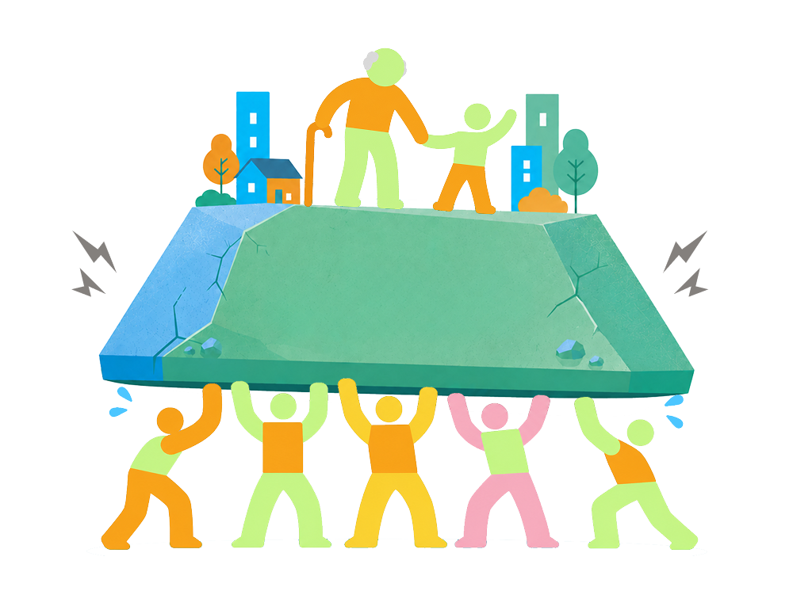
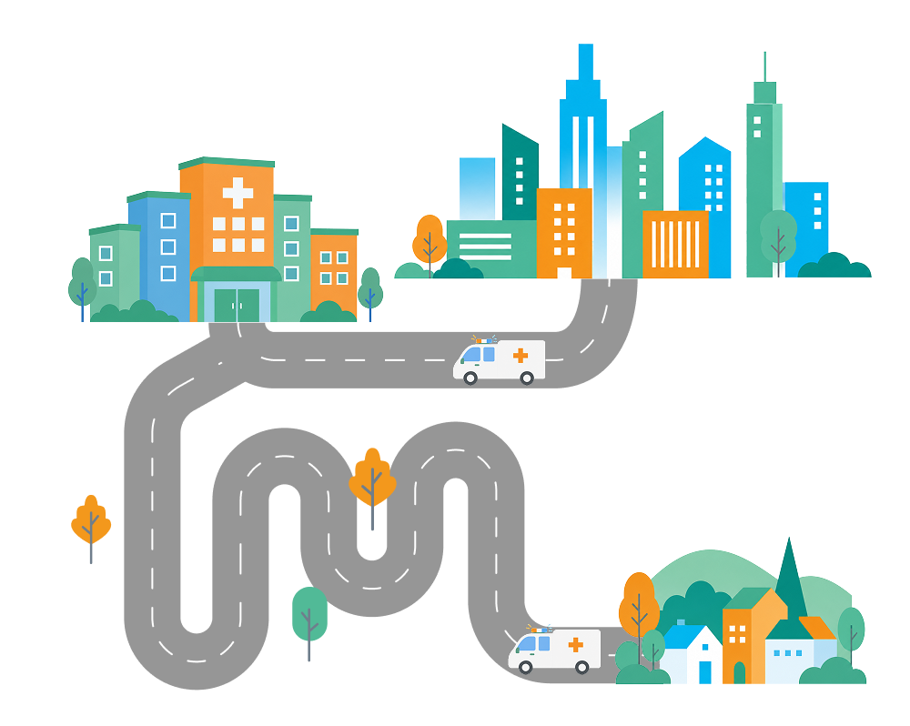
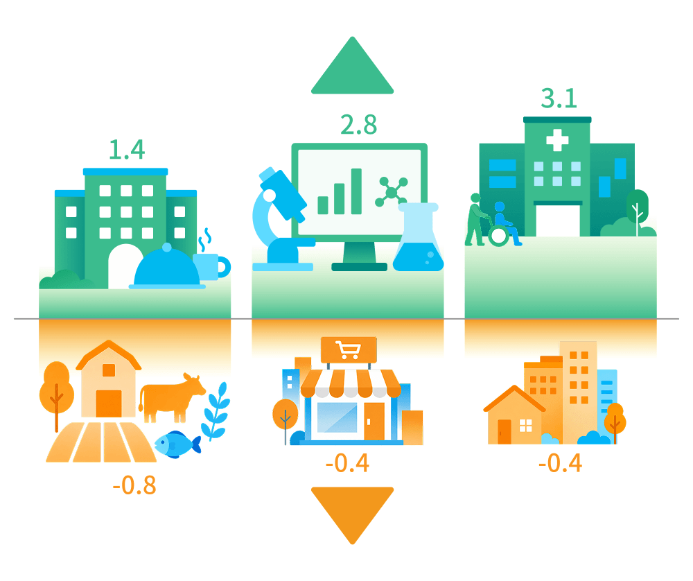
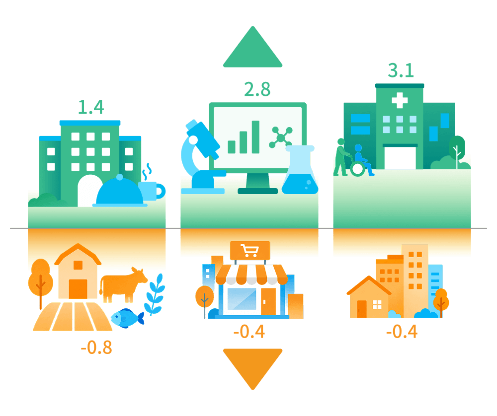

每5個台灣人就有1位是長者
隨著台灣人平均壽命延長，據內政部戶政司人口統計資料，至2026年3月底，台灣65歲以上長者達472萬2,683人，約佔全國人口比例為20.29％， 每5人就有1人是老年人。全國扶養比在2025年也來到近20年新高，每3個工作人口，平均要照顧1.38個老年或幼年人口。
資料來源：內政部戶政司歷年全國人口統計資料
某天早上起床，你突然收到一份神秘的任務......
任務指示
你必須治理一座2300人的村莊，這裡高齡少子化，光是長輩就超過460位，更不用說年輕人多數離鄉就學、就業。作為全村希望的你，需要克服這個地方所面臨的困境。
上限7個全形字
看你會成為什麼樣的村長吧！
自2024年6月總統府宣布設置「全社會防衛韌性委員會」，
一夕之間，「韌性」一詞變成熱門關鍵字，內政部更積極推動韌性社區工作。
但什麼是「地方韌性」，為什麼社區、鄉鎮需要具備韌性？
當台灣地方創生發展邁向第八年，許多人開始思考什麼是地方的需要；
地方團隊是否可以不再糾結「產值」與「價值」的矛盾，同時發展志業與事業；
而面對天災動輒衝擊與時代變遷下的長期壓力，有無足夠能力建構自己的韌性系統來因應各種衝擊。
地方創生需要更上位的整體性評估，從經濟、社會、自然環境、基礎建設、人才培育、集體認同六大面向，
提供標準化且可操作的指引，引導地方團隊規劃合適的行動策略，以面對高齡少子化、城鄉發展資源不均等考驗。
讓這場地方韌性的耐力賽，可以關關難過關關過，所有願意留在地方的人都能好好生活。



隨著台灣人平均壽命延長，據內政部戶政司人口統計資料，至2026年3月底，台灣65歲以上長者達472萬2,683人，約佔全國人口比例為20.29％， 每5人就有1人是老年人。全國扶養比在2025年也來到近20年新高，每3個工作人口，平均要照顧1.38個老年或幼年人口。
資料來源：內政部戶政司歷年全國人口統計資料
面對居高不下的高齡人口，台灣各地的醫療資源與機構準備好了嗎？為了讓各醫療院所分工合作、醫療資源有效地被運用，台灣醫療院所層級分為醫學中心、區域醫院、地區醫院及基層診所，各層級醫院負責不同的角色任務。
2024年數據統計，能照護照顧急重症病患的醫療院所以高雄最多，金門、馬祖僅有一間，相差73倍，有半數的縣市僅有個位數，顯示醫療資源與量能在各地很有大的懸殊差異。
但什麼樣的醫療模式才能回應地方真實的需求？如何在有限的資源下，讓每位傷病個案都能受到妥善的照顧與關注？是地方亟須要解決的課題。
資料來源：中華民國醫師公會全國聯合會

少子化危機，不到50人的小學數量逐年升高，2024年全台各縣市50人以下小學數量，以雲林、嘉義縣、南投最多，有8個縣市50人以下學校佔比超過三分之一。
多數縣市將「50人」列為啟動學校合併或停辦的評估門檻，但一間學校的退場，不僅影響孩童的就學權益，也會改變地方的支持系統，學校附近的商家因為沒有需求而結束營業，父母為了小孩的教育必須離開，移居者會考慮到沒有學校而無法移入，導致地方留人更加困難。
資料來源：內政部社會經濟資料服務平台

從2025-2030年行業別人力需求之年均成長率可以發現，未來人際互動高、因應高齡化社會的相關服務業、以及與AI相關的資通訊、工程等人力需求將會快速擴增，而農林漁牧業、批發及零售業、不動產業的人力需求則負成長。
地方如何維持經濟體內的產業多樣性，讓每個留在地方的人才都能適性適所、發揮所長，以及因應產業發展，造成的棲地破壞、影響生物多樣性等問題，如何在經濟、環境之間拿捏平衡，都是地方長期面臨的難題與挑戰。
資料來源：國家發展委員會產業人力供需資訊網 行業別人力需求推估
看經過921地震的南投埔里，各路人馬如何協力建立地方韌性。
以國發會《地方創生實踐行動價值研析與深化》計畫為基礎，提供地方團隊行動指南，盤點困境、設定行動目標、檢視改變，跟著三步驟，找到面對變局也能持續前進的方法。